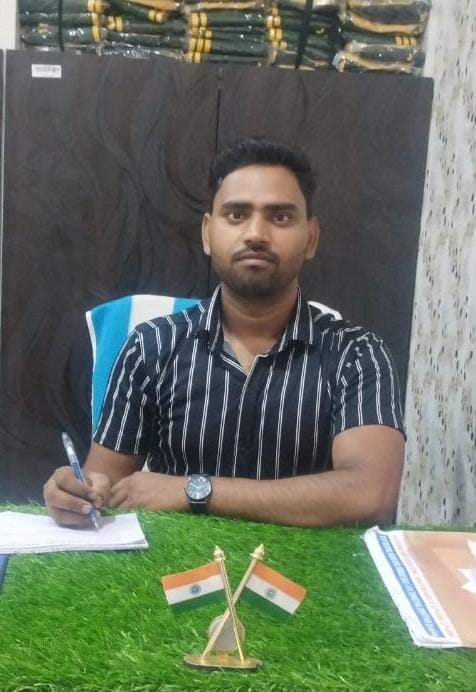
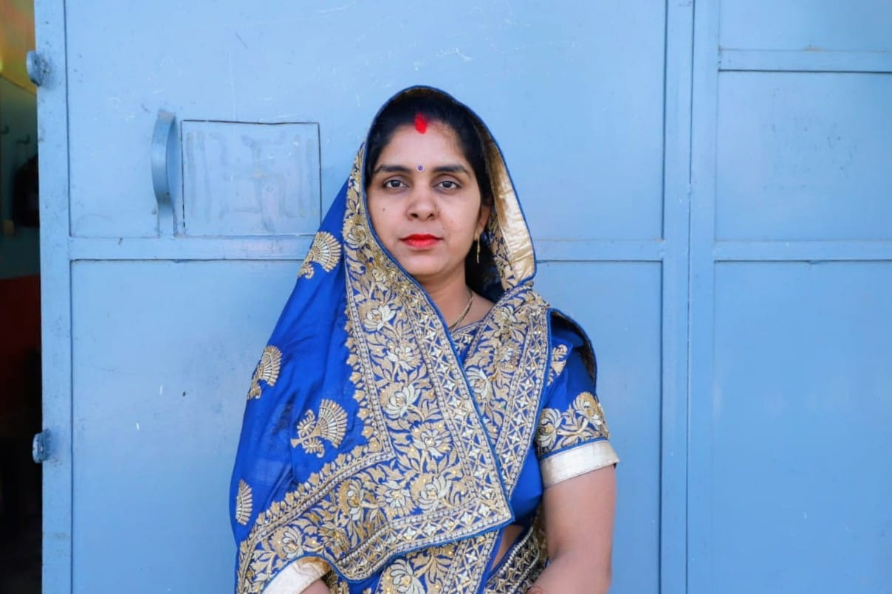
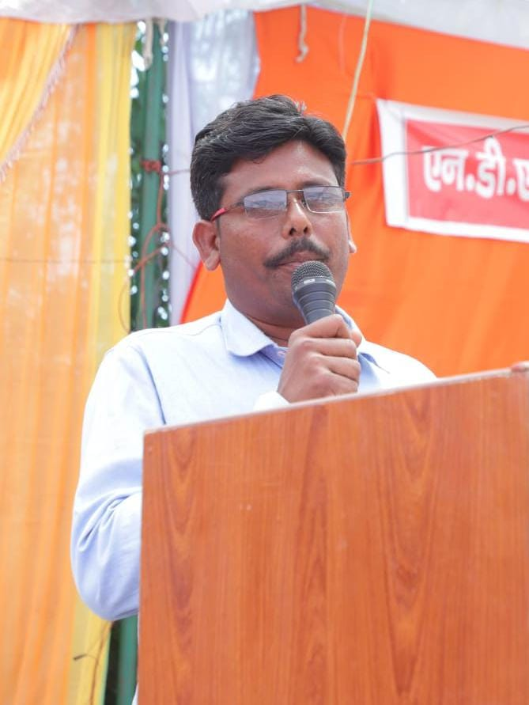

About NDNL Vidya Mandir
NDNL Vidya Mandir, situated in Mudiya, T. Pasgawan, Pilibhit (U.P.), is a prestigious residential school affiliated with the Uttar Pradesh Board.
Since its establishment, the school has been committed to nurturing students through quality education, discipline, and a value-based approach.
Our Vision
To create a learning environment that empowers students from all backgrounds to become responsible, capable, and culturally rooted citizens with strong moral character and academic excellence.
Our Mission
- To deliver UP Board-based quality education in both Hindi and English medium
- To integrate traditional values with modern learning
- To prepare students for competitive exams (Navodaya, Sainik, etc.)
- To promote physical training and discipline through NCC
Meet Our Management Team
Mr. Munish Kumar
Manager
📞 8192953333

Er. Varnit Agnihotri
Vice Manager
📞 8630285971

Mr. Vipin Gangwar
Principal
📞 9760127137

Mrs. Deeksha Patel
Treasurer
📞 7088864627

Mr. Vageesh Dutt Sharma
Guardian Representative
📞 9027290859
Infrastructure & Campus
NDNL Vidya Mandir offers a serene and eco-friendly campus with spacious classrooms, a digital smart lab, science laboratories, a library, and playgrounds for various sports. Our residential facilities ensure a homely and secure environment for all students.
Student Life
Life at NDNL Vidya Mandir goes beyond academics. Students engage in daily yoga, NCC training, cultural programs, debates, competitions, and spiritual learning. Our goal is to provide an all-round development experience that encourages leadership, teamwork, and creativity.
Why Choose NDNL Vidya Mandir?
- ✅ Personal attention to each student
- ✅ Hostel facility with full security and supervision
- ✅ Focus on entrance exam preparation (Navodaya, Sainik, RMS)
- ✅ Emphasis on moral values, discipline, and Indian culture
- ✅ Affordable fee structure for rural students
Achievements
- 🏆 many students selected in Navodaya and Sainik School exams
- 🏅 Regular NCC participation and state-level recognition
- 🎖️ Annual cultural and sports events for all-round development
Join Us
NDNL Vidya Mandir welcomes students from across the region who seek quality education, discipline, and a bright future.
Join us to experience a nurturing and inspiring learning environment!